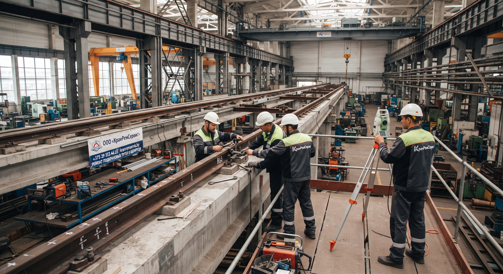

ООО «КранРемСервис» выполняет комплексный ремонт надземных и наземных подкрановых путей для мостовых, козловых кранов и кран-балок на промышленных предприятиях.
Мы проводим нивелировку с использованием современного геодезического оборудования, рихтовку, замену рельсов и направляющих, ремонт стыков и балок. Гарантируем идеальную геометрию путей и строгое соблюдение допусков Проматомнадзора.

Мы выполняем работы любой сложности, от регулярного обслуживания до полной замены путей на промышленных объектах.
Профилактические работы для поддержания путей в рабочем состоянии в пределах допустимых отклонений.
Масштабные работы при сильном износе путей или изменениях в конструкции здания.
Комплекс работ для козловых и портальных кранов, работающих на улице.
Наши специалисты выезжают на объект и проводят точную нивелировку путей. Выявляются отклонения по высоте, ширине колеи и прямолинейности. Составляется акт осмотра.
На основе данных геодезии мы разрабатываем проект производства работ (ППР) и согласовываем с вами точную смету без скрытых платежей.
Остановка крана, выполнение рихтовки, замены рельсов, сварки и ремонта балок согласно утвержденному плану.
После ремонта проводится контрольная нивелировка. Если все в пределах допусков, мы выдаем паспорт на подкрановые пути и гарантию на выполненные работы.
Заполните форму — мы свяжемся с вами, уточним детали и рассчитаем стоимость работ. Ответим в течение 1 рабочего дня.